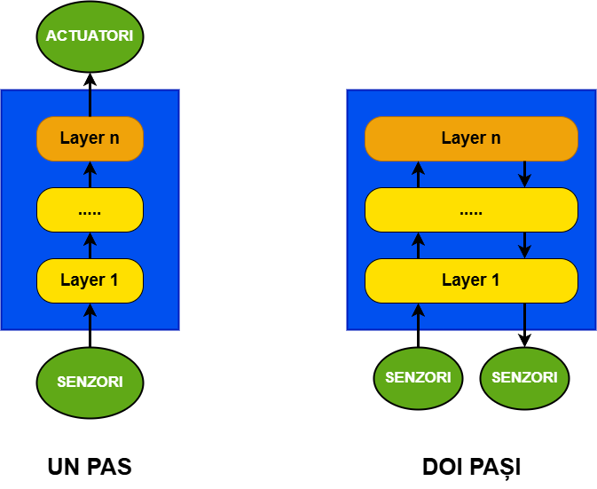
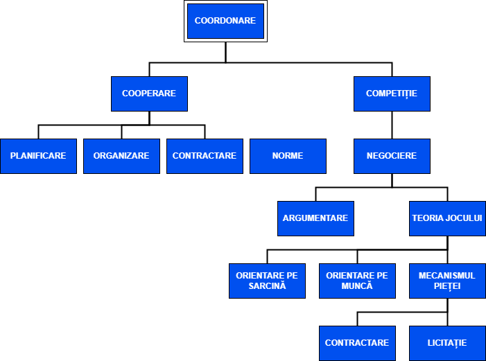

1.2.2 Multiagenții
Scopul acestei secțiuni este de a face migrarea de la arhitectura unui singur agent la arhitectura unui grup de agenți. Agenții luați în mod individual sunt nefolositori în cele mai multe cazuri, deoarece cele mai multe scenarii implică agenți care interacționează. În aceste situații cele mai importante aspecte sunt legate de modul în care ei comunică și cum interacționează. Prin aceste mecanisme, comportamentele agenților devin mai complexe decât simpla sumă a comportamentelor individuale.

Fig. 2.10 Arhitectură cu straturi verticale
1.2.2.1 Coordonarea

Fig. 2.11 Clasificarea coordonărilor